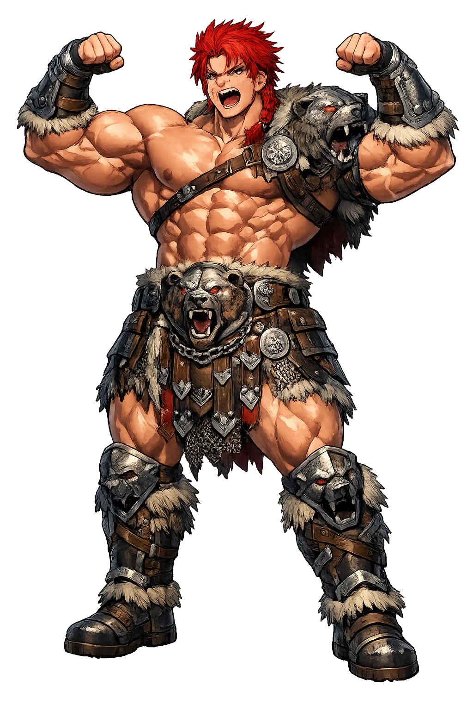
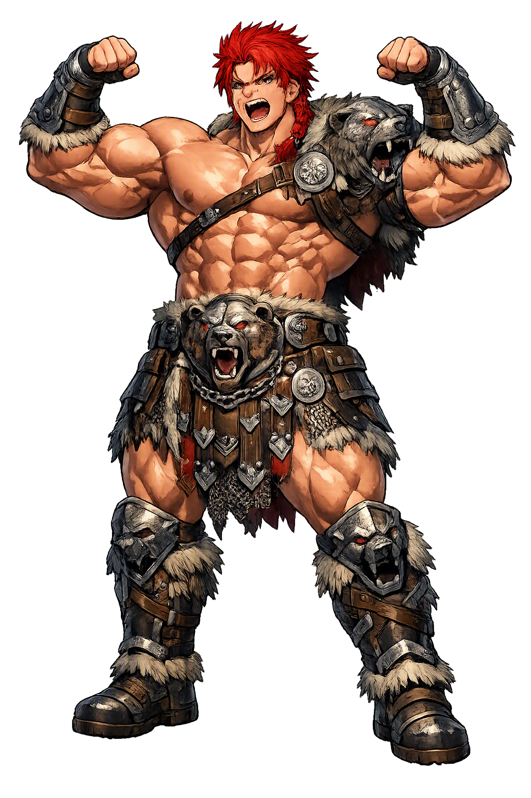

Unicode restoration and ASCII comparison
ᛘᛅᚴᚾᛁ
The name in its original Norse form. Magni (ᛘᛅᚴᚾᛁ) is attested in the source tradition — “The strong one”. Its original diacritics and script distinctions carry the full phonetic and orthographic weight of the source tradition.
magni
The plain magni form is identical to the Unicode restoration. Because this name is already written in Latin letters, no diacritics, stress, or script information were lost — only capitalization differs.
Magni
The Unicode restoration does not need to recover lost marks for Magni. Its value is canonical spelling and consistent cataloguing, not the reconstruction of erased orthography. The domain is readable as-is to both DNS and humanity.
Magni.com → magni.com
The non-ASCII characters in Magni are encoded while the ASCII remains visible. To the DNS, it is Punycode. To humanity, it is Magni.
How Magni travels from ancient script to the modern URL
Owned, ideal, and ASCII forms of Magni
Magni
Restores ᛘᛅᚴᚾᛁ. The full Unicode restoration. magni.com is not in the PuniCodex collection — it is watched for release; if it drops, this temple upgrades to an owned flagship.
How Magni was spoken
Magni is Þórr's son by the giantess Járnsaxa: the prodigy of the Edda, three nights old when he freed his father from under the fallen Hrungnir's leg — the feat all the Æsir together could not manage. And Vafþrúðnismál looks past the end of the world to give him the hammer itself: after Ragnarǫk, Magni and his brother Móði inherit Mjǫllnir.
The stone giant fell with his leg across Þórr's neck, and all the Æsir could not move it. Magni, three nights old, flung it off.
Gold-mane, Hrungnir's horse and the prize of the duel — Þórr gave him to the boy, and Óðinn reproved the gift.
The hammer the brothers inherit: 'Móði and Magni shall have Mjǫllnir when Vingnir's fighting is done' (Vafþrúðnismál 51).
'Iron-knife', the giantess mother — the Edda names her once, as the reason Óðinn grudged the boy his horse.
Stories of Magni
Magni's dossier is two scenes and a promise: a duel's aftermath, a gift reproved, and a prophecy at the end of the world. The sources tell them in a few lines each, and those lines have carried him for eight hundred years.
Hrungnir, the stone-hearted giant, rode his gold-maned stallion Gullfaxi into Ásgarðr on the heels of Óðinn's wager over whose horse was fastest; feasted, he drank Þórr's ale and boasted he would carry off Valhǫll and kill every god but Freyja and Sif. Þórr was summoned, and the duel was set at Grjótúnagarðar, the stone courts. The giants, fearing for Hrungnir, built him a companion of clay nine leagues tall — Mǫkkurkálfi, Mist-calf, with a mare's heart that failed him — and Hrungnir came with a heart, a shield, and a weapon all of stone, his whetstone raised. Þjálfi ran ahead and cried that Þórr would come up from below, so the giant stood on his shield to guard his feet; the thunderer came in fury and hurled Mjǫllnir through the whetstone, shattering it — one shard lodged in Þórr's own head — and Hrungnir crashed forward with his leg across Þórr's neck.
Þjálfi dispatched the clay giant, then went to lift Hrungnir's leg off Þórr and could not; all the Æsir came, and none of them could move it either. Then Magni arrived — the son of Þórr and the giantess Járnsaxa, and he was three nights old — and he flung the leg off his father and said it was a shame he had not come sooner: he thought he could have struck the giant dead with his bare fist. Þórr, delighted, gave him the horse Gullfaxi that Hrungnir had ridden. Óðinn objected: Þórr did wrong, he said, to give so fine a horse to the son of a giantess and not to his own father. It is the whole of Magni's boyhood in one scene — and the only childhood the Edda gives any of the gods.
In the wisdom-contest, when Óðinn has wrung the fates of the gods from the giant Vafþrúðnir, one answer carries the brothers past the end of the world: 'Móði and Magni shall have Mjöllnir when Vingnir's fighting is done.' Vingnir is Þórr's own name. The prophecy does not flinch from what it costs — the father falls — and it does not waste words on grief: it states the inheritance, the weapon passing whole into the hands of the sons.
At Ragnarǫk Þórr meets Jǫrmungandr, the Midgard serpent, and strikes it dead — and walks nine paces before he falls to the venom it spat at him. But the world does not end there. Snorri's vision of the green earth after the fire gathers the survivors at Íðavöllr, where Ásgarðr stood: Baldr and Höðr return from Hel, reconciled, and 'Þórr's sons Móði and Magni shall come there, and they shall have Mjöllnir.' The hammer survives the god. The Edda's strangest consolation is also its plainest: the fathers die in the fire, and the sons carry their tools out of it.
The Poetic Edda's other notice of Magni is a single genealogical line, and a revealing one. In Hárbarðsljóð, trading insults with the disguised ferryman, Þórr finally names himself at full strength: 'I am Óðinn's son, Meili's brother, and Magni's father' — Magna faðir. Of all the titles the thunderer could have chosen to close a flyting — breaker of giants, lord of Thrúðheimr, wielder of the hammer — the name he reaches for is his son's.
Magni is the Edda's answer to the question every parent eventually asks: will anyone be strong enough when I cannot stand up? The myth answers it twice. Once at Grjótúnagarðar, where the whole company of the gods heaves at a dead giant's leg and fails, and a three-night-old boy walks up and does it — strength, the story insists, is not a function of age or rank, and help can arrive from the person everyone overlooked. And once at the end of the world, where the father kills the serpent, walks nine paces, and falls — and the hammer is not buried with him. Móði and Magni carry Mjǫllnir into the green world. The Edda does not promise that the strong live forever. It promises that strength, like the hammer, is inheritable.
Enter Extended Lore